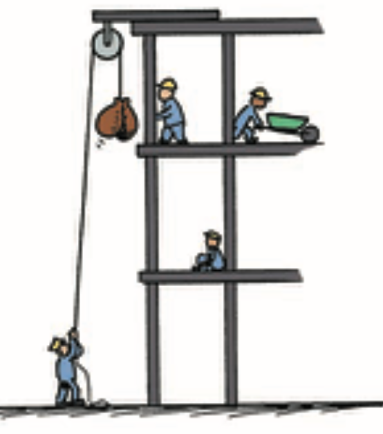
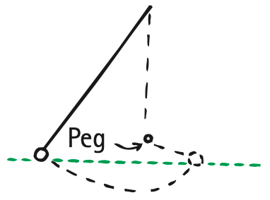

Note: source content for cp_section_7_2 was not available and is not included below.
Work
One of France’s greatest scientists was Emilie du Chatelet, who lived during the 1700s when all of Europe was celebrating the achievements of Isaac Newton. She was accomplished not only in science but also in philosophy and even biblical studies. She was the first to translate Newton’s Principia into French, and she annotated her translation with new results in mechanics.
Of du Chatelet’s several lovers, Voltaire was the most famous. For 15 years they lived together, collecting a library of more than 20,000 volumes, each encouraging and critiquing the work of the other. Theirs was one of the most exciting and passionate European love stories.
At the time there was a great debate in physics about the nature of the “oomph” possessed by moving objects. Scientists in England claimed that oomph (what we now call kinetic energy) was mass × velocity, whereas scientists such as Gottfried Leibniz in Germany claimed it was mass × velocity squared. The debate was finally settled by observations and a paper published by du Chatelet that cited another scientist’s simple experiment to distinguish between the two hypotheses. When a small solid brass sphere is dropped into clay, it makes a dent. If the ball hits with twice the speed, and if its oomph is mass × velocity, then the dent in the clay should be twice as deep. But experiment showed the dent was 4 times as deep (2 squared). Dropping the ball from a higher point so it hit the clay with 3 times the speed produced a dent that was not 3 times as deep but 9 times as deep (3 squared). Since Emilie du Chatelet was so highly respected by the scientific community, she ended the controversy by supporting the argument that the oomph of moving things is proportional to mass × velocity squared.
Emilie became pregnant at the age of 42, which was dangerous at the time. Doctors then had no awareness that they should wash their hands or sterilize instruments. There were no antibiotics to control infections, which were common. She died a week after childbirth. Voltaire was beside himself: “I have lost the half of myself—a soul for which mine was made.” Most of Voltaire’s extensive publications came before Emilie’s death, relatively little afterward. He is said to have grieved for her into his ripe old age.
As we learned in Chapter 6, the product of mass and velocity is what we call momentum. In this chapter, we see that the product of mass and velocity squared (together with a factor of ½) is what we call kinetic energy. We will now learn about forms of energy, including kinetic energy. We begin by considering a related concept: work.
Work
In Chapter 6, we saw that changes in an object’s motion depend both on force and on how long the force acts. In that case, “how long” means time, and we call the quantity (force × time) impulse. But “how long” does not always mean time; it can mean distance also. When we consider the quantity (force × distance), we are talking about an entirely different concept—work. Work is the effort exerted on something that will change its energy.
When we lift a load of gravel against Earth’s gravity, we do work. The heavier the load or the higher we lift the load, the more work we do. Two things enter the picture whenever work is done: (1) the application of a force and (2) the movement of something by that force. For the simplest case, where the force is constant and the motion is in a straight line in the direction of the force,1 we define the work done on an object by an applied force as the product of the force and the distance through which the object is moved. In shorter form:


Work = force × distance
W = Fd
If we lift two loads of gravel one story up, we do twice as much work as if we lift one load the same distance because the force needed to lift twice the weight is twice as much. Similarly, if we lift a load two stories instead of one story, we do twice as much work because the distance is twice as great.
We see that the definition of work involves both a force and a distance. A weightlifter who holds a barbell weighing 1000 newtons overhead does no work on the barbell. She may get really tired holding the barbell, but, if it is not moved by the force she exerts, she does no work on the barbell. Work may be done on the muscles by stretching and contracting, which is force times distance on a biological scale, but this work is not done on the barbell. Instead, the expended energy heats her arms. Lifting the barbell, however, is a different story. When the weightlifter raises the barbell from the floor, she does work on the barbell.
Figure 7.3 was omitted because no matching captured image was supplied.
Work generally falls into two categories. One of these is the work done against another force. When an archer stretches her bowstring, she is doing work against the elastic forces of the bow. Similarly, when the ram of a pile driver is raised, work is required to raise the ram against the force of gravity. When you do push-ups, you do work against your own weight. You do work on something when you force it to move against the influence of an opposing force—often friction.
The other category of work is work done to change the speed of an object. This kind of work is done in bringing an automobile up to speed or in slowing it down. Another example of this kind of work is when a club hits a stationary golf ball and gets it moving. In both categories (working against a force or changing speed), work involves a transfer of energy.
The unit of measurement for work combines a unit of force (N) with a unit of distance (m); the unit of work is the newton-meter (N·m), also called the joule (J), which rhymes with cool. One joule of work is done when a force of 1 newton is exerted over a distance of 1 meter, as in lifting a baseball over your head. For larger values, we speak of kilojoules (kJ, thousands of joules) or megajoules (MJ, millions of joules). The weightlifter in Figure 7.3 does work in kilojoules. To stop a loaded truck in its tracks when it is moving at 100 km/h takes megajoules of work.

Power
The definition of work says nothing about how long it takes to do the work. We do the same amount of work when we carry a load of groceries up a flight of stairs whether we walk up or run up. So why are we more tired after running upstairs in a few seconds than after walking upstairs in a few minutes? To understand this difference, we need to talk about a measure of how fast the work is done—power. Power is the amount of work done per time it takes to do it:
Power = work done / time interval
A high-power engine does work rapidly. An automobile engine that delivers twice the power of another automobile engine does not necessarily produce twice as much work or make a car go twice as fast as the less powerful engine. Twice the power means the engine can do twice the work in the same time or do the same amount of work in half the time. A more powerful engine can get an automobile up to a given speed in less time than a less powerful engine can.
Here’s another way to look at power: A liter (L) of fuel can do a certain amount of work, but the power produced when we burn the fuel can be any amount, depending on how fast it is burned. It can operate a lawnmower for a half hour or a jet engine for a half second.
The unit of power is the joule per second (J/s), also known as the watt (in honor of James Watt, the 18th-century developer of the steam engine). One watt (W) of power is expended when 1 joule of work is done in 1 second. One kilowatt (kW) equals 1000 watts. One megawatt (MW) equals 1 million watts. In the United States, we customarily rate engines in units of horsepower and electricity in kilowatts, but either may be used. In the metric system of units, automobiles are rated in kilowatts. (One horsepower is 746 watts, so an engine rated at 134 horsepower is a 100-kW engine.)
Figure 7.5 was omitted because no matching captured image was supplied.
Kinetic Energy
Kinetic Energy
If you push on an object, you can set it in motion. If an object is moving, then it is capable of doing work. It has energy of motion. We say it has kinetic energy (KE). The kinetic energy of an object depends on the mass of the object as well as its speed. It is equal to the mass multiplied by the square of the speed, multiplied by the constant ½:
Kinetic energy = ½ mass × speed2
KE = ½mv2

When you throw a ball, you do work on it to give it speed as it leaves your hand. The moving ball can then hit something and push it, doing work on what it hits. The kinetic energy of a moving object is equal to the work required to bring it to its speed from rest, or the work the object can do while being brought to rest:
Net force × distance = kinetic energy
Fd = ½mv2
Figure 7.10 was omitted because no matching captured image was supplied.
Note that the speed is squared, so if the speed of an object is doubled, its kinetic energy is quadrupled (22 = 4). Consequently, it takes four times the work to double the speed. Whenever work is done, energy changes.

Figure 7.12 was omitted because no matching captured image was supplied.
Textbook Sections: 7.1–7.3
Learning Target: Students will explain work as energy transfer and distinguish kinetic energy, potential energy, mechanical energy, and power.
- I can determine whether a force does work on an object.
- I can explain that work requires force and motion in the direction of the force.
- I can distinguish kinetic energy from potential energy.
- I can calculate simple work, power, gravitational potential energy, and kinetic energy.
- I can explain how energy changes form in everyday situations.